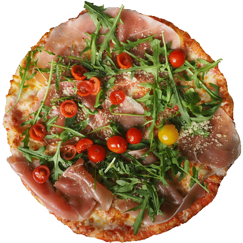
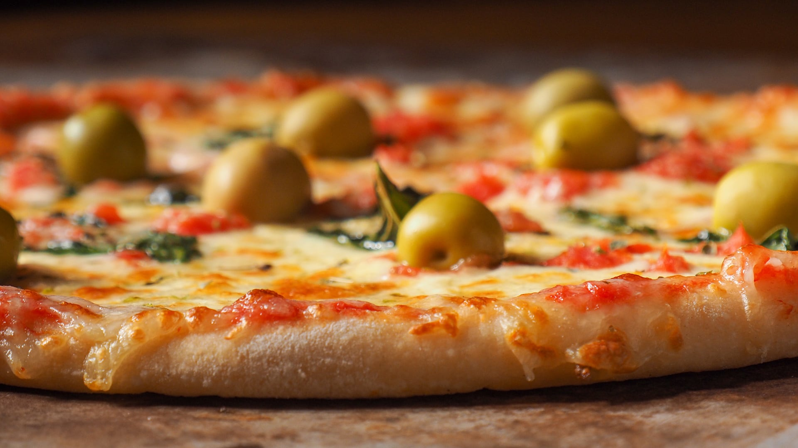
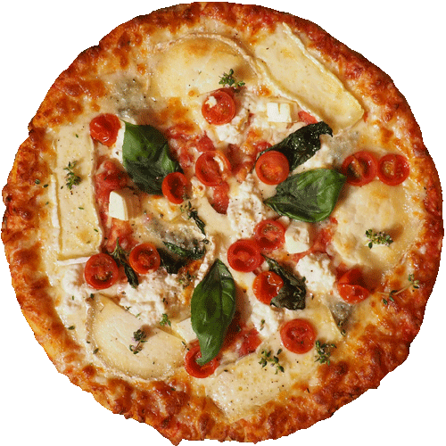
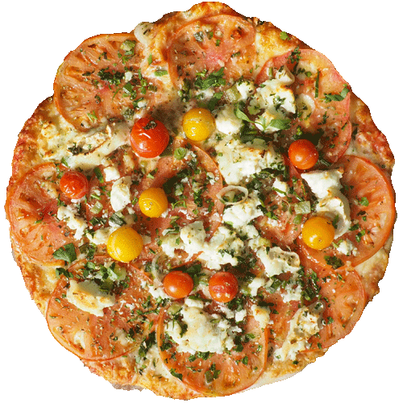
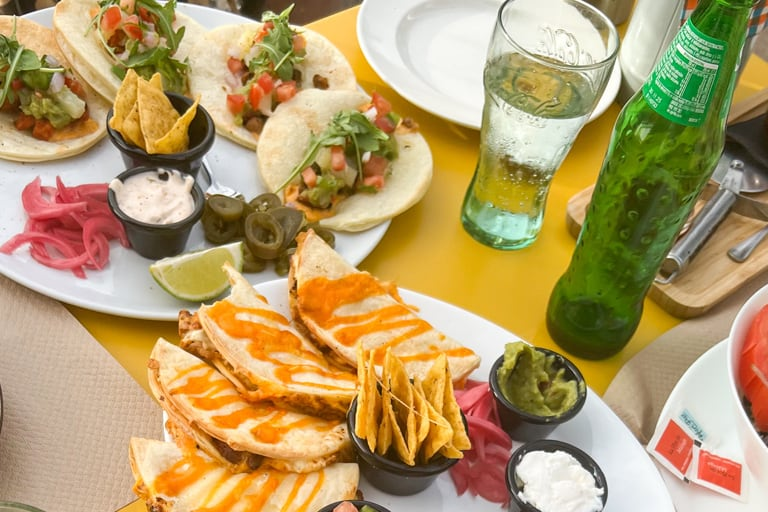
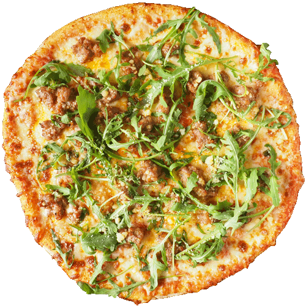
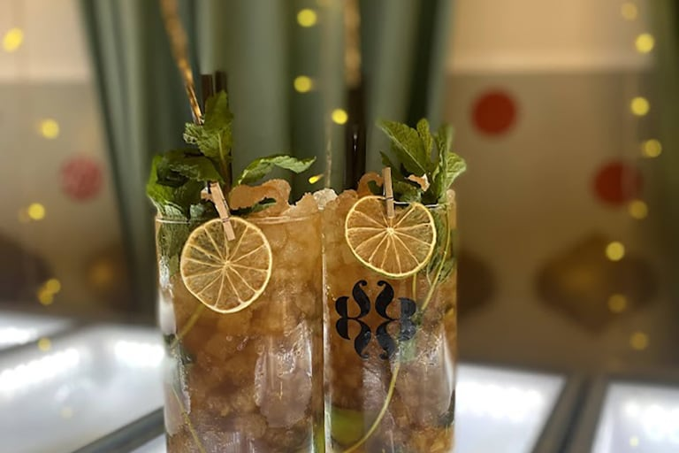
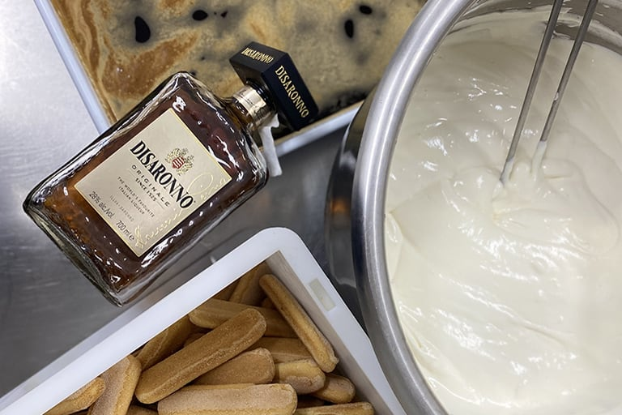
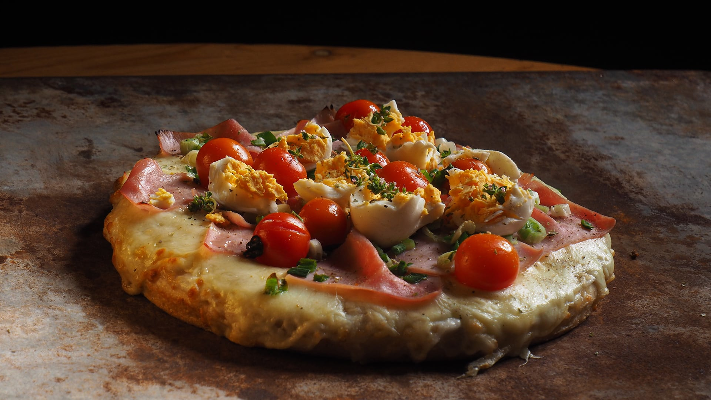

01

Horno de leña · Masa artesana · Campanet, Mallorca
Recetas argentinas con ingredientes frescos y de proximidad, cocinadas en horno de leña en el corazón de Campanet. Opciones sin gluten y veganas.
Descubre más

Somos Flor y Rod, cocineros argentinos con raíces italianas y españolas. Nuestras nonnas preparaban docenas de pizzas y cada día era una fiesta. Hoy seguimos honrando ese legado en Campanet.
valoración en Google
reseñas de clientes
pizzas de autor exclusivas
tipos de masa artesana
I — La masa madre
01 / 07







Mueve el ratón

Atardeceres sobre la Tramuntana.
4,8 / 5 Reseñas reales en Google
Hemos ido varias veces y nunca defrauda. El sitio es bonito tanto para sentarse arriba en la terraza como en el comedor de abajo. El personal es super amable. Y la comida está muy buena.
Sin palabras, creo que son las mejores pizzas de Mallorca. Local acogedor, servicio de 11. Agradecer a la gerencia el detalle con nosotros, hizo inolvidable un día especial.
Sin duda, uno de mis sitios favoritos de toda Mallorca, merecido paseo hasta allí. Empanadas espectaculares, pizzas tremendas y el tiramisú no de 10, de 100. Camareros súper majos y amables.
Una gran experiencia en familia gracias al servicio de su personal, el ambiente, las vistas y por sobre todas las cosas unas pizzas espectaculares. Fugaza, Adriana y Demetrio nuestras preferidas.
Reservas abiertas · Campanet, Mallorca
o llama al 640 80 96 08 · info@bacanpizzasdeautor.com
Plaça Son Bordoy, 6
07310 Campanet
Mallorca, Illes Balears